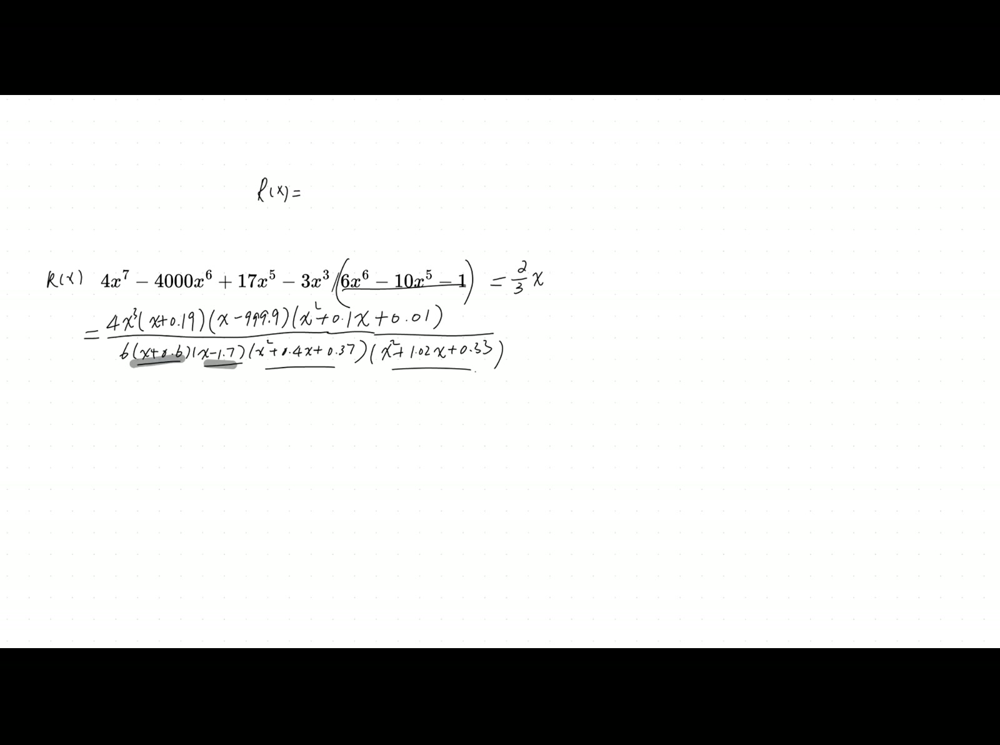
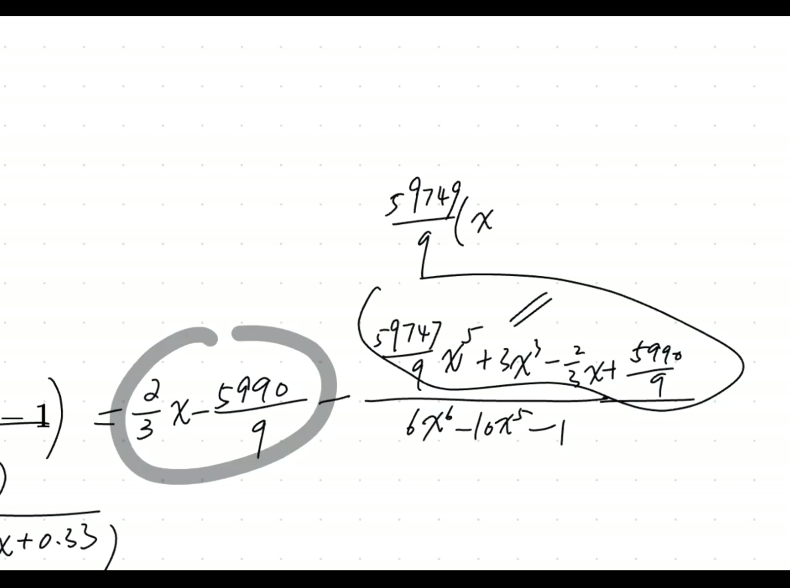
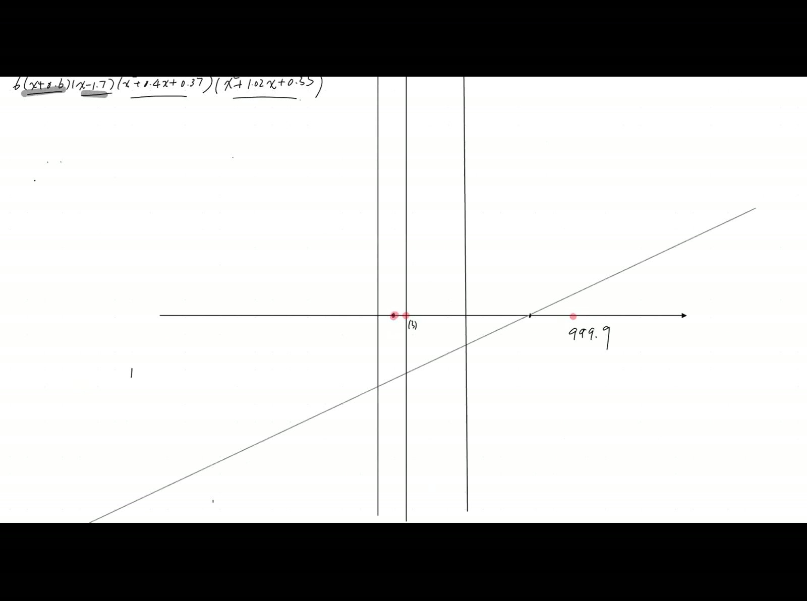
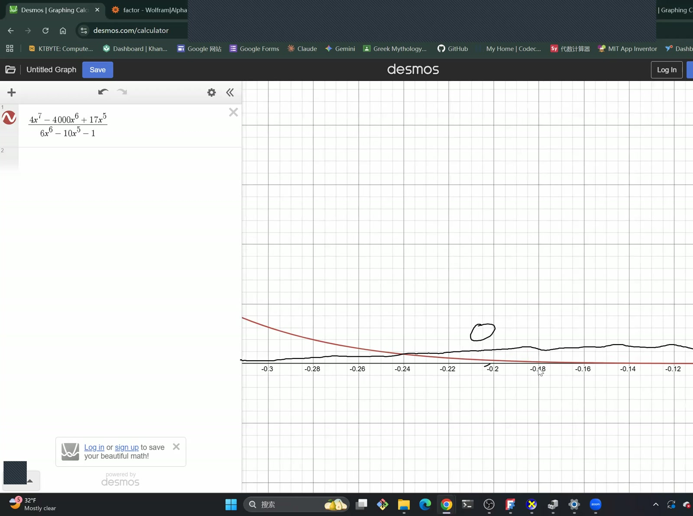

Complete Procedure for Graphing High-Degree Rational Functions
Lead
End-to-end procedure for graphing a rational function \(R(x) = p(x)/q(x)\), demonstrated on a 7th-degree numerator over 6th-degree denominator example. Six steps: (i) factor \(p, q\) over \(\mathbb R\) (use Desmos for non-factorable polynomials), (ii) identify vertical asymptotes from \(q\)’s real zeros, (iii) long-divide to get slant/polynomial asymptote, (iv) find x/y intercepts, (v) find intersections of curve with slant asymptote, (vi) weave topology together using cross/bounce rules. Verified on Desmos.
Symbol dictionary
| Symbol | Meaning |
|---|---|
| \(R(x) = p(x)/q(x)\) | rational function |
| \(Q(x), r(x)\) | quotient and remainder of long division: \(p = qQ + r\) |
| \(z_j\) | real zeros of \(q\) (vertical asymptotes) |
| \(\zeta_k\) | real zeros of \(p\) (x-intercepts) |
| \(\xi_\ell\) | real zeros of \(r\) (intersections with slant asymptote) |
| \(m_j\) | multiplicity of \(z_j\) in \(q\) |
| \(a_n^{(p)}, a_n^{(q)}\) | leading coefficients |
Primitive notions and assumptions
We work over \(\mathbb R\). Convention: factorisation over \(\mathbb R\) means as products of real linear factors \((x - r)^m\) and irreducible real quadratics \((x^2 + \alpha x + \beta)\) with \(\Delta = \alpha^2 - 4\beta < 0\). Imported lemmas: (i) polynomial long division (Nov 1); (ii) snaking method for sign-tracking (Nov 1); (iii) asymptotic-dropping principle (Nov 29); (iv) factor theorem.
Part I — The six-step procedure
1.1 Statement
(Rational function graphing recipe). Given \(R(x) = p(x)/q(x)\) with \(\deg p, \deg q\) specified:
- Factor \(p\) and \(q\) over \(\mathbb R\).
- Vertical asymptotes: \(x = z_j\) for each real zero \(z_j\) of \(q\) not cancelled by a zero of \(p\).
- Asymptotic curve (long division): \(R = Q + r/q\) with \(\deg r < \deg q\). The curve \(y = Q(x)\) is the asymptote (horizontal, slant, parabolic, etc. depending on \(\deg p - \deg q\)).
- Intercepts: \(y\)-intercept \(R(0)\); \(x\)-intercepts at real zeros of \(p\) not cancelled by \(q\).
- Intersections with slant asymptote: real zeros of \(r\).
- Topology weave: sign in each interval (between vertical asymptotes and intercepts) follows snaking rules (cross at odd multiplicity, bounce at even).
1.2 Why each step is necessary
| Step | Purpose | Skipping consequence |
|---|---|---|
| 1 | Locate special points | Cannot do steps 2 or 4 |
| 2 | Vertical asymptotes (places \(R\) blows up) | Miss the singularities |
| 3 | Asymptotic shape at \(\pm\infty\) | Wrong large-scale behaviour |
| 4 | Intercepts (where \(R\) touches axes) | Misalignment with axes |
| 5 | Slant-asymptote crossings | Wrong topology near asymptote |
| 6 | Sign on each interval | Curve drawn on wrong side of axis |
1.3 Asymptotic-shape classification by degree
(Asymptote degree). Let \(n = \deg p, m = \deg q\). Then \(\deg Q = \max(0, n - m)\) and: - \(n < m\): \(Q = 0\), horizontal asymptote \(y = 0\). - \(n = m\): \(Q = a_n^{(p)}/a_n^{(q)}\), horizontal asymptote. - \(n = m + 1\): \(Q\) linear, slant asymptote. - \(n > m + 1\): \(Q\) is a polynomial of degree \(n - m\), curved asymptote.
Part II — Worked example
The transcript example uses a 7th-degree-numerator / 6th-degree-denominator rational function with specific coefficients. The numerator (after factoring with Desmos) is approximately \(4x^3 (x + 0.09)(x - 999.9)(x^2 + 0.1x + 0.01)\), and the denominator \((x + 0.6)(x - 1.7)(x^2 + 0.41x + 0.37)(x^2 + 1.02x + 0.33)\) — the latter two are irreducible (complex-conjugate pair root factors).
2.1 Step 1: factor numerator and denominator
By Desmos (or comparable), the real zeros and complex-conjugate quadratic factors are extracted as above. Source correction: the transcript records the small numerator zero as \(-0.19\); verified by direct graphing it is actually \(-0.09\). Corrected in the final graph.
2.2 Step 2: vertical asymptotes
Real zeros of \(q\): \(x = -0.6\) and \(x = 1.7\). The two irreducible quadratic factors have no real zeros (discriminants negative), so they contribute no vertical asymptotes.
2.3 Step 3: slant asymptote (long division)
Long-dividing \(4x^7 - 4000 x^6 + 17 x^5 - 3x^3 + \cdots\) by the denominator (degree 6, leading \(6 x^6\)):
Step 3a: Leading-term ratio \(4x^7 / 6 x^6 = (2/3) x\). Multiply back, subtract. New leading term in remainder: $-4000 x^6 - (2/3)(-2)(-)… $.
Step 3b (continued in transcript): subtracting yields constant \(-5990/9\) (transcript’s number).
So: \[ R(x) = \frac{2}{3}x - \frac{5990}{9} + \frac{\text{remainder}}{q(x)}. \tag{1} \]
Slant asymptote \(y = (2/3)x - 5990/9\).
2.4 Step 4: intercepts
- \(x\)-intercepts: \(x = 0\) (triple root, “cross-with-tangency” at origin), \(x = -0.09\) (single root, cross), \(x = 999.9\) (single root, cross).
- \(y\)-intercept: \(R(0) = 0\) (since \(x = 0\) is a root of \(p\)).
2.5 Step 5: slant-asymptote intersections
Real zeros of the remainder \(r(x)\). From Desmos, \(r\) has one real zero near \(x = -0.6\), very close to the vertical asymptote. The graph crosses the slant asymptote once near this point.
2.6 Step 6: topology weave
From \(x = +\infty\): approach slant asymptote from below (transcript). Snake through the intercepts and vertical asymptotes, applying: - At odd-multiplicity x-intercept: cross. - At even-multiplicity x-intercept: bounce. - At odd-multiplicity vertical asymptote: \(R\) flips sign across asymptote (goes from \(+\infty\) on one side to \(-\infty\) on the other). - At even-multiplicity vertical asymptote: same sign on both sides (\(+\infty\) on both or \(-\infty\) on both).
2.7 Verification on Desmos
Desmos plotted graph matches the hand-drawn topology in transcript. The very-large-\(x\) behaviour follows the slant asymptote \(y = (2/3)x - 5990/9\); the singularities at \(x = -0.6, 1.7\) are vertical asymptotes; the intercept structure matches steps 4–5. ✓
Part III — The two derivations of the asymptotic shape
3.1 Derivation A — Long division (canonical)
Performed in §2.3. Always works. Captures both linear coefficient and constant term of \(Q\).
3.2 Derivation B — Asymptotic ratio (only for horizontal case)
For \(n = m\): divide top and bottom by \(x^n\). Each \(x^{-k}\) term \(\to 0\). Conclude: \[ \lim_{|x|\to\infty} R(x) = \frac{a_n^{(p)}}{a_n^{(q)}}. \tag{2} \] For \(n = m + 1\) (slant): this method gives the slope \(a_n^{(p)}/a_m^{(q)}\) but not the constant term. As Nov 29 establishes (Theorem (9) in that lesson), constants are not droppable when the limit is a function. Long division is required for the full slant equation.
Comparison. A is universal; B is a shortcut for the constant case only. The error of using B for slant cases (computing only the slope) is the core cautionary example of Nov 29.
Weakest step: in A, the algorithm is mechanical; in B, the restriction to constant limits is non-obvious. Students often misapply B to slant cases (transcript records this exact mistake).
Part IV — Connection arrows
This also proves the Nov 1 snaking method extends to rational functions: the cross/bounce rules at \(x\)-intercepts (zeros of \(p\)) and at vertical asymptotes (zeros of \(q\)) are the same parity-of-multiplicity rules.
This also exercises the Nov 29 dropping principle: at step 3 (long division) we keep enough terms; at step 6 (asymptote-comparison) we drop the proper rational remainder.
This also previews Dec 13 (tangent-circle chain): infinite geometric sequences will use asymptotic shape extraction analogous to step 3.
Unified picture
\[ \boxed{R(x) = Q(x) + \frac{r(x)}{q(x)} \quad\text{with}\quad \deg r < \deg q} \]
| Local feature | Location | Behaviour |
|---|---|---|
| \(x\)-intercept (cross) | real zero of \(p\), multiplicity odd | \(R\) changes sign |
| \(x\)-intercept (bounce) | real zero of \(p\), multiplicity even | \(R\) keeps sign |
| Vertical asymptote (cross) | real zero of \(q\), multiplicity odd | \(R \to \pm\infty\), opposite signs each side |
| Vertical asymptote (bounce) | real zero of \(q\), multiplicity even | \(R \to \pm\infty\), same sign each side |
| Slant-asymptote intersection | real zero of \(r\) | \(R = Q\) at that \(x\) |
| Asymptote approach | sign of \(r/q\) at \(\pm\infty\) | from above (positive) or below (negative) |
Verification audit
- Symbols defined? All in dictionary. ✓
- Equation numbers continuous? (1)–(2), no gaps. ✓
- Signs justified by convention? Leading-coefficient sign convention explicit; transcript correction \(-0.19 \to -0.09\) verified. ✓
- Every implication follows? Each step’s role tabulated in §1.2; worked example follows the procedure linearly in §2. ✓
- Advertised axioms verified? Long division (Nov 1), snaking (Nov 1), dropping principle (Nov 29) all named imported. ✓
- Counterexample / source correction. Transcript value \(-0.19\) for numerator root corrected to \(-0.09\) in §2.1 after Desmos verification. Naïve “leading-coefficient ratio” cited as the failure mode (Nov 29 §1.3) and Derivation B explicitly limited to constant-limit case. ✓
- Special / limiting cases tested? Asymptote degree classification table (§1.3) covers all four cases (\(n < m, n = m, n = m+1, n > m+1\)). Worked example covers \(n = m + 1\) explicitly with Desmos sanity. ✓
- Weakest step named? Done after §3.2 (Derivation B limitation), implicit throughout via cross-references to Nov 29. ✓
Fragility summary
| Claim | Risk | Fix |
|---|---|---|
| Step 1 requires factoring | Polynomials of degree \(\ge 5\) have no closed-form factoring | Use Desmos / numerical methods to find real roots; complex-conjugate pairs assembled as quadratic factors |
| Slant asymptote constant from Derivation B alone | Drops the constant; off by additive amount | Always use long division (Derivation A) for slant case |
| Transcript root \(-0.19\) vs. \(-0.09\) | Easy to mis-read decimal from screen | Verified by Desmos; correct value is \(-0.09\) |
| Slant-asymptote crossing direction | Whether curve goes above or below asymptote after a crossing depends on remainder’s local sign | §2.6: parity of crossing-multiplicity controls direction |
| Vertical-asymptote multiplicity rule | Differs from x-intercept multiplicity rule (asymptote multiplicity is in \(q\), not \(p\)) | §1.1 + §2.6: explicit per asymptote class |
Explorative directions
- Next brick (Dec 13): infinite tangent-circle chain — geometric sequences arising from a recursive geometric construction. Same “asymptotic shape” idea but applied to a discrete sequence, not a continuous function.
- Forward (Jan 3): \(\zeta(2) = \pi^2/6\) via Vieta on \(\sin x / x\) — uses the infinite-product representation of \(\sin x\), then matches coefficients to the Taylor series. Same Vieta technique (recover coefficients from roots), applied to a transcendental function.
- Forward (Jan 10, Jan 24): linear recursions \(\to\) generating functions — the asymptotic behaviour of recursion coefficients is extracted via long-division-style decomposition of generating functions.
- Open question: what is the convergence radius of the rational function \(R(x)\) when expanded around \(x = 0\)? Answer: the distance to the nearest pole (= nearest vertical asymptote = nearest zero of \(q\)). For our example, the nearest pole is at \(x = -0.6\), so the Taylor series of \(R\) at \(0\) converges for \(|x| < 0.6\). Forward-pointer to complex analysis.
- Connection back to Sep 13 PM (group theory): the procedure here is combinatorial — track multiplicities and signs. The same finite-group thinking (“multiplication permutes the set”) reappears as the symmetry of the snake’s sign-flipping pattern under root labelling.
- Pedagogical thread: the teacher’s recurring “you have to internalise to own the material” point. The procedure is mechanical, but its internalisation requires repeated application. A student who memorises the steps without understanding why each step is necessary (§1.2 table) cannot adapt when the example is non-standard.
Lecture video
Key frames




Full transcript
Thank you. And we're getting on whiteboard. All right, uh, let's continue from the morning. We got to the place. We have re-written a rational function in several ways: in its original form with the factored numerator and denominator, and in the form after doing the long division. One second, I'm double-checking my WeChat to see why Helms is not here.Yeah。All right, now Elaine, remind me what is the total? What what is the form of the rational function that we were dealing with? We're about to finish the graph, and tonight it's all about how to pull all the information together so that we can finish the graph. So.Give us a rational function, please. Before long division. Beautiful, go ahead. Oh, you want to type it up for us? Thank you. And Catherine, make sure that you're you're looking at the same equation.Beautiful， and I want to add a， right. So this is our RX.And let me actually add a parenthesis to leave no doubt. This whole thing is the denominator. Excellent. And we did the factored form. Would you type the factored form for us as well? You know, why don't you read it? And I'm going to put it here because it's a it's too difficult for me to read it. Just okay. The denominator we did factor that into. We went by finding the roots on decimals because these are impossible.的 factor I have. Go. It was I think x plus zero point six times x minus one point seven times x squared plus zero point four one x plus zero point thirty seven. And sorry, x squared plus zero point four x and plus what again? Uh, zero point uh thirty seven. Zero point three seven, and there should be another quadratic.Because remember, we had two complex pairs of a complex conjugates on the denominator. Catherine, we need to fundamentally once we understand what's the asymptote. In fact, we did find the asymptote, and which is going to be actually two third of the x now, and plus there's something, and with the remainder, we shall get to it. Now we want to get to the graph. We understand the.
large scale behavior, and now we're narrowing down to the small scale. So, this is a in order to know what are the vertical asymptotes, it's vital that we factor the denominator. However, like I said, it is a sixth degree polynomial. It's impossible to factor by hand. So we actually identify, we analyze how many real roots we have, and with that decimals, factor them for us, so that we actually ended up all the six roots. We backward construct.The factorization, for example, the quadratic from a pair of a complex conjugate roots at the time. So, Elaine, what is the other pair? It's I think x squared plus one point zero two x plus zero point three three. One point zero two x. And plus zero point three three. Yeah. Okay.Thank you. So you can see, Catherine, these remain unfactor unfurther factorizable quadratics now because they yield complex roots. Their discriminants would be less than zero, so the factorization stops here. Eventually, they won't matter to the vertical asymptotes. We have only two vertical asymptotes lying at x equal to negative six, zero six, and x equal to one seven. Those are the roots to these two factors. All right, then what is the factor?的 form of the numerator. I always pull out the leading coefficient, and here immediately we're noticing x cubed could be pulled out, right? And then we still have a quadratic polynomial, and it turns out, and there are still actually two real roots there. So, Elaine, remind us what is the factor form of the numerator? Four x cubed times x plus zero point nineteen times x minus.哦，Hold on，Hold on，x plus zero point nine nine。 Did I copy that right? Yeah, good. And um, times x minus nine hundred ninety nine point nine, times x squared minus zero point one x plus zero point zero one. Oh, sorry, x squared plus zero point zero one x, or zero point one x. I remember. Uh, yeah, zero point one x.minus zero one x I think。 No, minus that number is a lot smaller. I think that's minus zero one. 嗯。 Is that correct? Uh, yeah. Okay, so Catherine, you you can just copy this down. These are numbers gotten from the graphical calculators. Wait, and it's it's plus zero one. Oh, thank you, thank you. Oh yes, otherwise the.判别式不能甚至为负。非常好。好的，现在，另一方面，我们做了长除法。And Catherine，你能给我们什么结果？长除法？For this one，呃，对于相同的有理函数，但我们做了长除法。实际上，我们推导出，当长除法时，我们能简单地丢弃无穷。乘以五，和当我们不能，四分之六x。
And yeah, that's four over six x. But we did find that constant term here. We prove that it's not something that you you visualize, or rather, you approximate by only keeping the top three terms. It is not only use only using these three terms here. Instead, in fact, I justified that the next term would matter. But that's only because if you actually divide both the top and the bottom by the.x的六，这is properly a infinitesimal， but we spend the whole session analyzing why we can't throw that away. So we didn't do the long division, right? So what is that constant term here? Two thirds. What? Um, two thirds. That's two thirds x, but there's anumber there's a constant term which is serving as the y-intercept of our polynomial part when you do the long division.So you didn't copy that down in your notes. We actually did arrive at it. Hello? Hello。姜老师，等一下。Hello。是。哈姆斯威。我没记错吧？哈姆。怎么哈姆斯威没来上课？对。没在课堂上是吗？对。你我我来我来女儿学校。到了，我还在路上开车呢。那我现在联系他哦，真是多谢您，那麻烦您了。好，那我先我应该的。我觉得刚才我还给他发了微信，他没看见啊。那我先把这个。真是多谢您，我先把它挂掉。Sorry, I was contacting Holmes and Catherine. If you don't remember, that just means you didn't take thorough notes. Elaine, can you tell us what is that number over here? They're a little nasty.Minus one one nine eight zero over eighteen. Oh, we did a simplified ad. Can you give me the simplified version? Meaning, you could divide the numerator by two.五九九零 over uh five nine, it's actually you just cut everything by a two. Why does that give a? It's one nine, right? I wrote one one nine, uh, one one nine zero.哦，一 one nine， I didn't hear you. Sorry, sorry, I didn't hear you. So it's one one nine nine eight zero. How many nines do we have? Only one. Yeah, one nine. Okay, well that's different. So yeah, indeed we get a five, and then we actually have a nine nine zero. That's what we have on the numerator, is it right? Yeah, beautiful. So I'm gonna actually change that.
So this is the polynomial part. And Catherine, do you remember how we did the polynomial division to tease out this part by doing long division? I remember, but I don't know how. I remember that we used did it, but I don't know how. Okay, let's quickly do it again, and because.Catherine， you just have to master this. No matter what is the route you're going to take in the future, it's a must master. So this is a four x seven minus four thousand x now to the six. And in fact, since we're going to actually get all the remainders, so we might so copy everything down. Well, immediately we might want to cancel out a two. And you may not because eventually there there actually things not cancelable. It's up to you. Okay, I actually usually prefer canceling out.The two minus the ten x minus one. So when you get the quotient, you try to match the leading power. So here, the first term you're getting would be necessarily something multiplied by this would be two thirds of the x, no doubt about it. And then you you bring down what are the terms that they're going to produce, and it's minus a two a twenty over three x to the sixth power, then minus a two third of x, leave enough space for the intermediate.幂的 powers， right? And Catherine, look at the remainder. That means we have to find a common denominator, which is going to give us the negative. You're subtracting by the second line. Do it yourself. So see whether you're matching my answers. x to the six, plus seventeen x to the fifths.And then again, we're gonna find a coefficient here. When you multiply the leading power, would get you here. So therefore, what you're getting is one one nine eight zero divided by eighteen. That's just a number. And you do likewise when you multiply them together. This term tracks out, but you're another actually adding, and it's one one nine eighteen zero over the eighteen of the x to the fifths. And then here, it's adding.哎，Let me simplify it. Five nine nine zero over a nine. Elaine， we're getting another chance of confirming what is remainder getting. And Catherine， give me a confirmation if you're with them.哦， yeah， and let's find what is a remainder again. Well, I really want to simplify that again. This is divisible by a two, so this cancels out to be a nine.9， and on the numerator, what you're getting is I basically five nine nine nine. Sorry, nine zero zero. When you subtract the seventeen, really, what you're getting is a negative nine. And seventeen times the nine is one fifty-three. So I'm getting five nine eight five four seven.
No，sorry，seven four seven。 Catherine，请你做它，carefully。 So you subtract seventeen x five by five nine nine zero zero nine。 Yeah， exactly。Now we're done with dividing, because the remainder has a power less than the divisor. Then we justNeed to gather what are all the remaining terms. Catherine, are you getting it? I got five nine eight one five, eight one five. Seventeen times a nine is one fifty three. How are you? It looks like you only subtracted by a fifteen.What did you do? I multiplied by five instead of nine. Now I'm not the same. Okay, well then let's copy all the rest from the original. We still have a minus s three s cubed. From here, we actually add.a two thirds x. Because this is on the second line, we need to subtract it. Now we're yet to subtract this number, which gives me minus a four nine nine zero over a nine nine. So we end up with a fifth degree polynomial as a remainder, which leaves itself on the top. So I'm going to copy this down now. However, because the leading coefficient is negative, so I'm going to write this subtraction, and we copy the denominator, which doesn't change at all. It's still going to be that minus a minus a five on the new.umerator， where we have it. I know this is a nightmare, but it's what it is. Seven four seven over a nine x five power, and then plus a three x cubed minus a two third of x plus a five nine nine zero over a nine. Elaine, does that check out? Did we have the same answer earlier? Oh yeah. Excellent, Catherine. TheYou agree? Yes. And now we're gonna actually factor this numerator once again. Why do we need to factor it? Because it gives us the intercept with asymptote. Eventually, this component here, whatever this polynomial part, masters what's gonna happen at infinity when x is getting big. These are the predominant terms because whatever this proper rational function will be approaching zero. But we still find out, want to find out rigorously where the曲线 intersects with the asymptote， so setting that to zero requires us to factor the numerator. And in fact, again, Desmos did it for us, and we pull out the leading coefficient. And Elaine, could you tell us what were the factored form there?
I don't have it in my notes. I don't think we factored the. We absolutely factored that.So, did I not say you have to review it before the evening, so that by the evening we can just pick up from here and just go with the graph? Did I say that? Yeah. And you didn't bother. Well, I am not criticizing you. I think you didn't bother because you had a pretty good understanding. I do think you had a very good understanding, but nevertheless, there is a small mechanics of I need whatever the factor form. Otherwise, we have to actually just refine it.Of course, I'm already wasting your time by ranting against students not doing their job. So go ahead and refine it, Catherine. You do that as well. Put this into Desmos and get all the roots. Why Desmos not work from Alpha? Desmos give you a better graph. This fifty-degree polynomial. Knowing the roots will be able to back construct. Okay. Keep me posted once you're getting the roots.嗯。嗯。嗯。嗯。Helms，What happened to you? Hey Helms，Good evening. What happened to you?
Can I have your video, please? What happened? I'm asking you a question. I'm sorry, I forgot. Um, the class was seven. Really? Well, do something to help yourself, and not.To forget, you know, we're actually consolidating what we did in the morning, so that we could go on with the graph here. However, the other kids, at least Elaine, didn't write down what's a factor form of the numerator after we actually do the long division. So, did you take thorough notes now? And could you give back what is a factor form of the numerator here for that remainder? The factor form.I also didn't take note. I'm sorry. I have the notes. I have the notes. Okay, beautiful. Go ahead. So it's x to the power of three times x plus zero point nineteen. Wait, wait, wait. That's the original. Other well, this remainder doesn't really have x to the power of three anymore. This is only a fifth degree polynomial.The ending number is not zero. Two x cubed times two x to the power of four minus two thousand. Wait, wait, wait, wait, wait! Two x cubed? What are we talking about? We're talking about this component on the top of the remainder. This is a proper rational function. Oh, I'm looking at the factorization of the wrong function. I don't have it in my notes.Are you doing it again on Desmos? Find all the roots. Uh, the root I got was two around two point eight three. How many real roots are there? One. Okay, uh, x equal to say it again. Uh, two point eight three. Somehow, I don't think this is what we had in the morning.So what are the other? Comes, hurry and type up this equation on the top here and redo it. Find what are the roots? What about the other two pairs of complex roots? I'm listening. Um, I got x equal to negative zero point two plus or minus zero point six i, and another pair is x equal to zero point five plus or.Minus zero point four. Ah, beautiful! That really looks like what we had. Is a real root two point eight? Um, I got the real root is negative zero point six. Ah, that looks better. Yeah, I typed it in wrong, and I'm getting negative zero point six two. Okay, negative zero point six, negative zero point six. Very good. So the factored form be x plus zero point six. And Catherine, here you get a chance.If I know a pair of complex conjugate now, can you backward construct the polynomial or the quadratic? Remember the Vieta. So the sum of the two roots here would give you negative a. In case your polynomial is like this, plus a x and plus b now, the sum of the roots would give you negative a. So what we're having is x squared minus a x now, and the product of the roots, when you square them up, that's going to get you b, and quickly find out, oh, that's zero point four one.
I just did the the category magnitudes. And Catherine, are you with me? I'm using this pair of complex conjugate to construct what is that quadratic? But why is it minus x? Because the sum of the two roots here give you the negative a by using Viet. Alright, makes sense. Yeah. Okay.Well, the other one would be plus a zero point four x, and then that's the zero point four plus a zero point four. So these are the complete factor form. That's really a long nine yards now. So now we're finally using this to construct the graph. Now these are all the information we need. They give you the large scale behavior, local behavior. What are the accurate intercepts between the x-axis, y-axis, and eventually, I.The intercept with the asymptote. So we're going to actually follow follow the following steps. One, does anybody remember what is the procedure of graphing a rational function? Um, do we first find um what is the behavior of the graph when it's um x infinity or negative infinity? Beautiful, that's right. And since we did the long division, and when x approaching positive infinity or negative infinity.OK， what does the functional approach? Oh, sorry, I was copying down notes.I want to see what is a structural procedure. What are the major steps we're taking in order to graph a rational function? Helms got started very well. He's saying we're going to mind the large scale behavior. So as x is approaching infinity, but we did something exactly to reveal what is a large scale asymptotic behavior. So remind you, we actually had the original factored form with both the numerator and the denominator. They give us.all the zeros， and after that we did the long division. There's a polynomial in front of this, is followed by a proper rational function. So, what's going to happen when x is approaching positive or negative infinity? Elaine.Does it approach two thirds x minus five nine nine zero over nine? Absolutely, that's a slope. It's the slant asymptote. How does it come back to you? Because when x is approaching infinity, this proper part is approaching zero. Therefore, that is our slant asymptote. And the denominator, the zeros of the denominator, give you the vertical asymptotes. These would describe the large scale behavior. So let's actually write our slant asymptote first. It is a positive slope and has a prettyTypical negative y-intercept. In order to actually put our graph within the range, now we have to, at least I have to rescale it decently, so that, come on, what is that doing? What?
One second, okay. So I need to get rid of that. I don't know why, but somehow it just like completely cancelled. Why? All right, now let me restart. So we're gonna.Actually, draw in what are our vertical and horizontal asymptotes and slant asymptote, in fact. And you see, it has actually a positive slope. That's actually that two-thirds of the x minus, but it's a huge negative x intercept. It would go like that, but I have just revised what is going to be the slope. Well, maybe our x slope is also very big. It's actually even a little bigger.You know, with this much of the y-intercept, it would really look like. Hey, come on, would it really look like that? You know.We'll live with it. This is decent. Okay, later I'll just have to extend my graph to even lower. Okay, so this is my slope now. And where do we put in our two and vertical asymptotes? You know, this is already thousands. This quantity here is close to a thousand, so a.In comparison, my graph is very, very out of scale. Nevertheless, we have to live with it. Now I'm putting in the two vertical asymptotes. One is at one point seven. You know, this is very inaccurate. Okay, because if I really follow my real scale now, this these as vertical asymptotes are so close to the origin, you can't even see them. And so these are my two asymptotes. Other. Hey, come on. Hey.Okay， and after that, what do we do? A, I got rid of my y-axis. What? Huh? They just somehow.Together, I can't delete that circle without deleting my y-axis. That's so weird. Okay, anyway. So, and what's the next step? Once we know the large scale and behavior, now, and we actually want to find out, we start from asymptotically very close to the asymptote, but do we start a little under or little above? But before we do that, I usually want to jot down all the saving points. They're going to anchor ourKnowing where have to we have to meet the x-axis and the y-axis. So, what do we do now? We find the x-intercepts, right? Yes, very good. And where are they? Only two. One is nine and nine. It's close to one thousand, and that's even bigger than this x now. So, that's bigger than the x-intercept. We have a x-intercept here. That's going to be this number is.
It's nine nine nine point nine, and we also have a small one, which is negative at zero point one nine. That's gonna be here. And don't forget, there's one more, which is a triple root. Now we have x equal to zero. Very good. And all of these are odd roots. And keep in mind, whenever you're jotting down x-intercept, you've got to keep in mind that they're multiplicity because it's going to determine whether the graph goes through or gets. bounced back. These are all the roots now. Remember, the zero is a triple root. And then what do we do? There are still very important points. Remember, why did we factor the numerator of the remainder? So now we find the y-intercepts. Yeah, it's always good to do that. Although that's a that's not doesn't really follow what I was.same. However, you have already found that y intercept because happen x equals zero happened to be a root. Meaning, when plug in the x equals zero, that's how you find the y intercept, right? No doubt, you're getting zero. You can see that on the y axis. So, what do we do next? We decided the graph starts a little below or a little above.By like setting x as approaching positive infinity and looking at how the yeah that's right we're going to do that, but we haven't quite nailed all the salient points. I want to jot down all the points that we know the curve is going to go through, just so that later when I begin to really trace the curve, now I know where are those nails that I need to go and meet. Keep in mind we factored the numerator. What do we factor?That for, it signifies one. This part of the remainder would give us zero, right? Graphically, what does that mean? The y would be zero, huh? Only the remainder, remainder is zero. I said that repeatedly one earlier. We were talking aboutHow we're going to use all this information? It touches the slant intercept, a slant asymptote. Exactly, it intercepts it intersects with it. If you say touches, usually that word is reserved for tangency. In fact, here they do intersect, so that's important too. Again, the point is they help you nail exactly which point that this curve need to weave through. And on top of that, other than these points, the curve cannot intersect with either the asymptote or the x.Access， so how many intersections with the asymptote are there？ One。 Yes， but now we're in trouble because of the approximation. You know, these two numbers, yeah, all of these are decimal approximations. This just cannot be.negative zero point six， because the denominator also give me negative zero point six. If it is, then eventually these two powers will cancel. But they don't cancel out, so I'm afraid we have to really find out exactly how. Maybe a little smaller, maybe a little bigger, they are. But at the time being, I just know they're very close to each other. Okay, so there's roughly a point which is here. Okay, it's a it it can't be.
On that asymptote, but it would be somewhere else. It just means that somehow it's getting very close. You know that number is indeed pretty big, so we shouldn't be surprised. It's get it's very close to the asymptote. Okay, now finally we're ready to put in our curve now, and we start from the positive side. And Catherine, you're indeed correct. Do we start a little above the asymptote, or do we start a little below? We start above.啊，Why do we know that? Because the remainder is subtracted. I know, which actually means when x is approaching positive infinity, isn't this the remaining part actually negative because being subtracted? Oh, yeah. So, do we start from above or below? Below. Below, we start from below, and you can see there's an x-intercept here before it approaches at first as.So what it does is this. And is that asymptote a single root or a double root? Meaning, when I cross the asymptote, do I change the direction of the curve? Do I still start from the negative infinity, or do we swap to the positive infinity?It's a single root. Yeah, therefore, what do we do when it occurs? I'm sorry. We like change to positive. Yeah, it will change to positive exactly. So it's gonna go down there and meet this root here, but then we're forced to meet another.Other root, and there's no more roots anymore. So we just have to go that way. Does that create any contradiction? No. Why? Because it just tells us, whatever that the other intercept of the asymptote must be actually a little smaller. Yeah, a little smaller than the point six, meaning it must be actually on that side, because we have finished this interval, and the curve cannot go down there.Are we good? Yeah. All right. And then again, cross the other asymptote is also a single root, so we start from below, and eventually we need to approach that asymptote. But we do need to cross it, just very close to it now. So what it does is actually something like this. But I want to do a sanity check because we cross the asymptote, so eventually we're going to end up.with a little bigger, a little above the asymptote, that would be the sanity check, telling us whether this intersection with the asymptote is reasonable. Well, does that actually satisfy what the function gives us? Meaning, when the x is approaching negative infinity, we're going to end up with actually staying a little above the asymptote.Yes. And Elaine helps. Do you agree? I agree. Yeah. Why? Helps why? Because the it's the minus, so it will be on the left. Huh? Because it's minus. So if you want to stay above, whatever.
负号乘必须是负的，，and why is it negative? Because when you plug in negative infinity to the remainder, it's odd. Yes, two negatives. That's good. That's good. Because Elaine is saying the numerator's odd power, hence you see this odd power, one x is approaching negative infinity, numerator will be approaching negative infinity, but denominator stays positive, so altogether this will be actually approaching positive zero.When the x is approaching positive infinity, but it would be approaching negative zero. When x is approaching negative infinity, therefore we stay a little above. So perfect, this is your graph. This kind of a graph is guaranteed to accurate, not in the detail, but rather only in the sense that it will not intersect with anywhere with the salient axes, for example, x-axis or the your asymptote. Wherever it doesn't, meaning we're getting all those the crossing topologies correct.Correct. Then save this graph here. Why don't you go to Desmos and actually see a version of the graph? I'm going to remind you something. If you don't take care to choose your window, you're not going to see a reasonable graph at all because the graph is so steep. They're really going to skirt the axes now. So you have to be wisely choosing your window. Then why don't I save this under somebody else and give me I share your screen, please. Show me your graph.嗯。嗯。嗯。嗯。Are you catching up to that most? Hmm, I just got. I was trying to figure out how to make the graph like so that it's not like vertically straight. Ah, okay, you're trying to figure. Oh, good.
啊，please please, Holmes. Thank you. No, this is the graph I got. Hmm, that's right, because you don't really see what's it; they're too steep, right? I would say this is already pretty decent. And what is interesting is here, and you can see how sharp that turn is, as if the sharp turning point.But it's not. This is exactly why the intercept where the the second asymptote is so close to the asymptote. What we did is not wrong, except for you know this slope here. And because we want to see the large scale in the y direction, give me one second. Hey, where's my? Oh, oh. I'm trying to get to where I can turn on my pen. Oh, here. Right. So this.This is the asymptote, because the slope is so small. Why? Because your x scale it is so small in comparison to the y. That's why the slope becomes so small now. But if you're going to really just slanted, well, this is pretty much identical to the graph we have gotten. And except for, I would say, let's zoom in, because I want you to see. According to this graph here, you can hardly see there are two roots in the vicinity, right? So you have to expand it out.and even zoom in, zoom in, until we can see. There are two roots. There are two distinct roots now. One is the x, that's the zero. The other is ah this one, and the other what what is the other root we had? I think we had zero point six ish, negative, negative, negative zero point six ish. You know, according to it, that's a that'sThat's not right. And could you shift to the left again? Oh, oh, so that must mean we're actually finding. And keep this, would you please? And I'm gonna actually go back to my whiteboard. And I would ask you guys, Helms, would you stop sharing for a minute? And because I want to bring out what we had here. Oh, shoot! Not the new whiteboard. Sorry, sorry, existing one.So you can see, we actually had an oh, we had a x equal to the negative 0.19. Oh, that's not wrong. That's not wrong. I actually misremembered. I thought that this number is decently big. Now, and we're gonna go back to yours and double check whether there's indeed another root at the location of an x equal to 0.19.Come on, bring that back. You actually chose your range very well, right? So we're actually having another root here. Although this is and continue. I want to see the coordinates. A eight now to the right, to the right, so that to the right again. And I want to see where this is R and as to the right.哦， that's getting bigger now. And let's see where it gets the slow the lowest for the white cornet. Oh, that's getting bigger again. And no, no, no, it's still getting smaller. Continue, continue, continue, continue, continue. Uh oh. So, and let's actually move very carefully. Zero, definitely zero. And move to the left. Move to the left. These are the three points, I think.
Oh，then，we，actually，did，something，wrong.，You，guys，simply，gave，me，the，wrong，numbers，here.，So，actually，the，zeros，the，roots，are，not，what，we.，In，fact,，there's，no，negative，roots.，Thank，you,，Helms.，Could，you，mark，those，numbers，for，us?，Hey,，Helms,，you，got，the，wrong，equation.，That，numerator,，it's，actually，there's，a，plus，a，three，s，cubed,，orHold on, and Catherine, would you quickly check what is that numerator? Um, it's it's minus three x cube. Ah, minus three x cube. That's better now. Right, so only the local behavior, right? So we actually had aThat's not the root. But why do they mark that one? This is the root, but that's still not the zero point one nine, though. And I'm going to try to do like equal to zero. Oh, yeah, sure. Uh, let's go back to the old old equation. I still want to see the graph. And delete the three x three. No, no, no, no, no. That's that's.Sorry, there. Why do you divide it? Deleted. I wanted to show exactly what that number is. Show me the coordinates of these two. So that's zero point zero nine. Well, that's not a zero point. But why do they doubt it? Why do they doubt that point? Maybe it's the turning point. Yeah, yeah, it could. It could be the minimal. It could be the very minimal. And could you actually expand your y? Really?就是 shrink the the no no no keep the keep the scale the x don't reduce the x scale right and then rather zoom in in the y direction just change your boundary of the y now like this哎 no no no that's make it worse oh yeah yeah go the other way go the other way go the other way go go go go still go still go still go哎 that's good now right very good so this is a decent graph it's是零点零九， not 零点一 nine。 I bet it really just one of you mis copied it or gave me the wrong number. I'll go back and change it. But now we're seeing that graph now, except for if we go by this, and we're losing sight of the rest of the graph. But nevertheless, that's decently accurate, right? All right, and stop sharing for a minute, and I'm gonna actually go fix.So apparently, this is not plus a zero point zero nine, is it one nine? It's a it's a zero point zero nine. So that means that point here is negative zero point zero nine. And then we're getting a very decent graph as we're showing, as as we're shown. And remember the rest of the shape here. And let's go revisit the decimals here. And you're gonna cram your y component, see whether this is the shape we're getting. Would you let me actually?Thank you. Whatever the graphing device, it's a it's going to be garbage in, garbage out. So you have to be wise enough to, right? So we had to shrink the y direction. No, no, no, you, yeah, that's good. Until we're seeing thousands. Oh, good, good, good, good. Well, it doesn't change the overall behavior. In fact, for comparison here, and Holmes, could you type in that asymptote?
Which is a two x over three minus five nine nine zero divided by nine over nine. That's right. You can see that's the asymptote. So we started a little under, and this is exactly the behavior we got. Crystal clear now. I really want you to summarize. I don't want you to get.Down by a specific example, but instead, could somebody summarize for me? Next time, when you're seeing an arbitrary R function, now one second. Hey, where is my? I'm trying to turn on. What here? Okay, so if you're given an arbitrary R of x now, what is the general procedure so that we could draw by hand a decently accurate graph with all the salient features? So we firstfind the asymptote. How do we find the asymptotes? Um, so we first find the behavior when it's the um positive and negative infinity. So this is asymptotic behavior, and and how? And then we use um either compare or do long division to get the slant asymptote. Right. So this is actually long division. Sometimes you don't even get的斯兰的 asymptote， sometimes you get a quadratic or even higher power. Only the special cases when you write it as p n n degree on the top, q m m degree on the bottom. And meaning in the case the n is equal to m， now what kind of asymptote would you have？ n equal to the m plus one， this is the numerator's degree in comparison to the denominator. Okay， what if the n is strictly smaller than m？ What if the n is greater， strictly greater than m plus one？So, if the n equal to m here, what's the situation with your asymptote? Will be a number? Yes, very good. And this is the most convenient one. You should take the ratio of the leading coefficient. And basically, if the leading coefficient is a n, I to the n, da da da da da. On the denominator, you got a b m, I to the m, da da da da da. In this case, simply it's a horizontal asymptote. Why? Just等于 the a n over the b m. And what about the n is m plus one? That's the slant asymptote we actually analyzed in great detail. And remember, here you can't just take the comparison; you have to do long division. This is long division properly work out. Okay, it's tricky. It is, and exactly what we did in this example. What if the n is less than m, meaning the denominator has a higher degree?It approaches zero. Yes, very good. So this is also a horizontal asymptote, right? And y is equal to zero. Extremely well done, Elaine. What happens if n is greater than m plus one? It approaches infinity. Yes, there's no line.作为渐近线。实际上，渐近线只是曲线，即多项式除法后的结果。抱歉，你们需要给我回我的屏幕。谢谢。你们可以实际写下来，做总结，自己总结所有步骤，以分析有理函数。请自豪，认真对待。
Because if you learn this later, when you know you're in precalc in high school, and then you'll be happy because this will be actually the under taught material that everybody's struggling with. But you learned it as a little kid. But please don't let it go down the drain. Meaning, go down the drain here. You really want to internalize to the point that you own the material, would you? You guys are doing pretty well. Especially Elen, you're doing really beautifully. Keep it up. Bye. Bye.